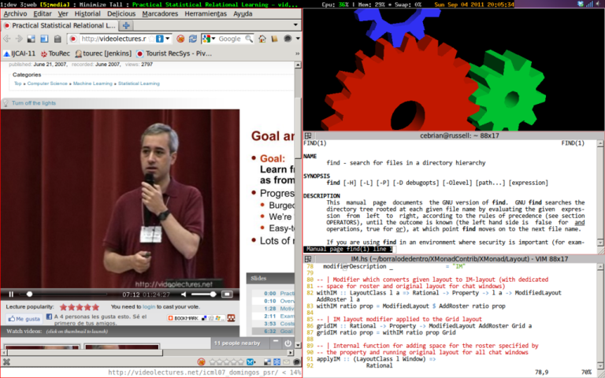

Fire a terminal, fire another terminal and tail some logs, open your browser and point to the web page you are developing, open your IDE and open three or four tabs with the code you suspect is causing the bug, put some breakpoints, alt-tab to the first terminal start your system under test, connect your debugging IDE to your system, perform some operations to your browser, catch the breakpoint, switch back and forth the code tabs, etc… This daily routine common to most developers, involves grabbing the mouse, arranging some windows, and switching context continuously. This creates a cognitive overload and a lack of productivity because developers are doing tasks not directly related to the task at hand.
This is the reason I don’t use Gnome any more and I’ve switched to Xmonad a tiling window manager that can be controlled almost exclusively with the keyboard. With this fully configurable window manager, I can move, resize, minimize, arrange, customize all the visible windows, move windows between workspaces, all with my hands not leaving the keyboard.The only thing I have not been able to accomplish is having the UrgentHook working for Skype. The Linux version of Skype fails to set the WM_URGENT X11 event when a new chat opens, and if I’m not in that workspace I don’t get any notification besides the bell. Still thinking about a good workaround, any ideas?
Here is a screenshot of xmonad in action with some applications in it,

If you plan to install Xmonad in your computer, use version 0.10 or superior because it solves some nasty problems with Java applications. In case it is not yet ready for your favourite distribution, follow these instructions. In order to have this configuration working, just write the following 3 files:
._xsession_ with the programs you need to start when the session begins (network manager, batery manager, etc…). Put it in your $HOME dir.
._xmobarrc_ with the configuration of your handy textual status bar . Put it in your $HOME
xmonad.hs with the configuration of the window manager itself. Put it under $HOME/.xmonad
xmonad.hs is a pure Haskell file for configuring the window manager, no XML, not another fancy configuration language. Some comments to the configuration file
lines 23-26, send Thunderbird and Skype to their dedicated workspaces
line 29, name the workspaces
lines 32-50, define new key combinations, for navigating the tiling windows, send windows to background and toggle between the tiled arrangement and focusing the whole screen into one window
lines 52-55, define how I want the windows to be arranged. Basically, create a specific configuration for Skype in its dedicated workspace, and for the rest of workspaces, don’t hide the menu, allow navigation with the cursors and minimize unwanted windows.
lines 57-77, ensemble the main xmonad window manager with the desired configuration. Spawn the status bar, and append the predefined layouts, keybindings and window hooks. Redefine some keys and fool Java setting the name of the Window Manager to LG3D in order to avoid problems with focus.
import XMonad
import XMonad.Hooks.DynamicLog
import XMonad.Hooks.ICCCMFocus
import XMonad.Hooks.ManageDocks
import XMonad.Util.Run(spawnPipe)
import XMonad.Util.EZConfig(additionalKeys)
import System.IO
import XMonad.Hooks.ManageHelpers
import XMonad.Hooks.UrgencyHook
import XMonad.Hooks.SetWMName
import XMonad.Layout.Minimize
import XMonad.Layout.WindowNavigation
import XMonad.Layout.ToggleLayouts
import XMonad.Layout.IM as IM
import XMonad.Layout.PerWorkspace
import XMonad.Layout.Reflect
import XMonad.Layout.Grid
import Data.Ratio ((%))
import qualified Data.Map as M
-- Send applications to their dedicated Workspace
myManageHook = composeAll
[ className =? "Skype" --> doShift "4:skype",
className =? "Thunderbird" --> doShift "2:mail"
]
-- Name the workspaces
myWorkspaces = ["1:dev","2:mail","3:web","4:skype","5:media", "6:office"] ++ map show [7..9]
-- Add new Keys
newKeys x = M.union (keys defaultConfig x) (M.fromList (myKeys x))
myKeys conf@(XConfig {XMonad.modMask = modm}) =
[
-- Minimize a window
((modm, xK_z), withFocused minimizeWindow)
, ((modm .|. shiftMask, xK_z), sendMessage RestoreNextMinimizedWin )
-- Window navigation with cursors
, ((modm, xK_Right), sendMessage $ Go R)
, ((modm, xK_Left ), sendMessage $ Go L)
, ((modm, xK_Up ), sendMessage $ Go U)
, ((modm, xK_Down ), sendMessage $ Go D)
, ((modm .|. controlMask, xK_Right), sendMessage $ Swap R)
, ((modm .|. controlMask, xK_Left ), sendMessage $ Swap L)
, ((modm .|. controlMask, xK_Up ), sendMessage $ Swap U)
, ((modm .|. controlMask, xK_Down ), sendMessage $ Swap D)
-- Togle Fullscreen
, ((modm, xK_f ), sendMessage ToggleLayout)
]
-- Define the default layout
skypeLayout = IM.withIM (1%7) (IM.And (ClassName "Skype") (Role "MainWindow")) Grid
normalLayout = windowNavigation $ minimize $ avoidStruts $ onWorkspace "4:skype" skypeLayout $ layoutHook defaultConfig
myLayout = toggleLayouts (Full) normalLayout
-- Main executable
main = do
xmproc <- spawnPipe "xmobar /home/cebrian/.xmobarrc"
xmonad $ withUrgencyHook NoUrgencyHook $ defaultConfig
{ manageHook = manageDocks <+> myManageHook <+> manageHook defaultConfig
, keys = newKeys
, workspaces = myWorkspaces
, layoutHook = myLayout
, logHook = takeTopFocus >> dynamicLogWithPP xmobarPP
{ ppOutput = hPutStrLn xmproc
, ppTitle = xmobarColor "green" "" . shorten 50
, ppUrgent = xmobarColor "yellow" "red" . xmobarStrip
}
, modMask = mod4Mask -- Rebind Mod to the Windows key
, terminal = "terminator"
, startupHook = setWMName "LG3D"
} `additionalKeys`
[ ((controlMask .|. shiftMask, xK_l), spawn "xscreensaver-command -lock")
, ((controlMask, xK_Print), spawn "sleep 0.2; scrot -s")
, ((0, xK_Print), spawn "scrot")
].xsession
#!/bin/bash
xrdb -merge .Xresources
# Configure xrandr for multiple monitors
# External output may be "VGA" or "VGA-0" or "DVI-0" or "TMDS-1"
EXTERNAL_OUTPUT="VGA-0"
INTERNAL_OUTPUT="LVDS"
# EXTERNAL_LOCATION may be one of: left, right, above, or below
EXTERNAL_LOCATION="left"
# In case I want to have both monitors on
case "$EXTERNAL_LOCATION" in
left|LEFT)
EXTERNAL_LOCATION="--left-of $INTERNAL_OUTPUT"
;;
right|RIGHT)
EXTERNAL_LOCATION="--right-of $INTERNAL_OUTPUT"
;;
top|TOP|above|ABOVE)
EXTERNAL_LOCATION="--above $INTERNAL_OUTPUT"
;;
bottom|BOTTOM|below|BELOW)
EXTERNAL_LOCATION="--below $INTERNAL_OUTPUT"
;;
*)
EXTERNAL_LOCATION="--left-of $INTERNAL_OUTPUT"
;;
esac
xrandr | grep $EXTERNAL_OUTPUT | grep " connected "
if [ $? -eq 0 ]; then
xrandr --output $INTERNAL_OUTPUT --off --output $EXTERNAL_OUTPUT --auto
# Alternative command in case of trouble:
# (sleep 2; xrandr --output $INTERNAL_OUTPUT --auto --output $EXTERNAL_OUTPUT --auto $EXTERNAL_LOCATION) &
else
xrandr --output $INTERNAL_OUTPUT --auto --output $EXTERNAL_OUTPUT --off
fi
trayer --edge top --align right --SetDockType true --SetPartialStrut true --expand true --width 15 --height 12 --transparent true --tint 0x000000 &
xscreensaver -no-splash &
# Allow nautilus to take care of plugin USB drives and Dropbox icons
nautilus --no-desktop -n &
if [ -x /usr/bin/nm-applet ] ; then
nm-applet --sm-disable &
fi
if [ -x /usr/bin/gnome-power-manager ] ; then
sleep 1
gnome-power-manager &
fi
/usr/bin/gnome-volume-control-applet &
dropbox start &
exec /home/cebrian/.cabal/bin/xmonad.xmobarrc
Config { font = "-*-Fixed-Bold-R-Normal-*-13-*-*-*-*-*-*-*"
, bgColor = "black"
, fgColor = "grey"
, position = TopW L 85
, commands = [ Run Cpu ["-L","3","-H","50","--normal","green","--high","red"] 10
, Run Memory ["-t","Mem: <usedratio>%"] 10
, Run Swap [] 10
, Run Date "%a %b %_d %Y %H:%M:%S" "date" 10
, Run StdinReader
]
, sepChar = "%"
, alignSep = "}{"
, template = "%StdinReader% }{ %cpu% | %memory% * %swap% <fc=#ee9a00>%date%</fc>"
}And don’t forget to add an entry for your new Xmonad desktop in /usr/share/applications/xmonad.desktop changing the path to your appropiate home
[Desktop Entry]
Type=Application
Encoding=UTF-8
Name=Xmonad
Exec="YOUR HOME HERE"/.xsession
NoDisplay=true
X-GNOME-WMName=Xmonad
X-GNOME-Autostart-Phase=WindowManager
X-GNOME-Provides=windowmanager
X-GNOME-Autostart-Notify=trueAnd to /usr/share/xsessions/xmonad.desktop
[Desktop Entry]
Encoding=UTF-8
Name=XMonad
Comment=Lightweight tiling window manager
Exec="YOUR HOME HERE"/.xsession
Icon=xmonad.png
Type=XSession